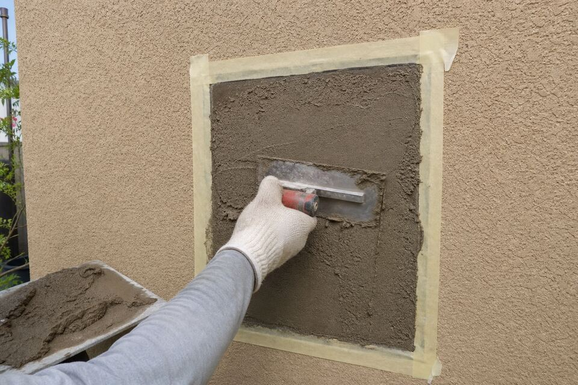

Stucco Repair in Santa Fe, NM
Cracks, chips, bulges, soft spots, stains spreading below a parapet — stucco announces its problems on the most visible surface you own. Repair starts with reading the damage for its cause, because a crack filled without its reason fixed is a crack on a return schedule.

Reading cracks like a diagnosis
Crack patterns are a language. Fine map-cracking across a whole wall is usually the finish coat aging — cosmetic, fixable with sealing or a color coat. Vertical cracks at windows and door corners are stress concentrations, common and manageable. Stair-step cracks tracking along block joints, cracks that keep growing season to season, or anything paired with a bulge speak to movement or moisture underneath — those get investigated, not just filled. The repair visit reads the pattern first and tells you which conversation you are actually in.
Bulges and soft spots mean water won
Stucco that bulges, drums hollow when tapped, or crumbles at a touch has usually let water behind it — and in Santa Fe the entry point is most often above: a cracked parapet cap, a failed canale flashing, a roof edge. The honest repair opens the failed section, dries and treats what is behind it, fixes the water path (or points you to the roofer when it is theirs), and rebuilds the coats. Skipping the water step is how the same wall fails twice — see the parapet page for the usual suspect.
What a real patch involves
Cut back to sound stucco, square the edges, treat or replace damaged lath and paper, then rebuild the system — scratch, brown, and finish coats matched to the existing texture. Texture matching is half the craft: a smooth patch on a heavy-textured wall reads forever. Color gets blended as close as sun-fade allows, with the honest conversation about when a sectional color coat is the better-looking answer.
Before winter, especially
Every open crack on a Santa Fe wall is a freeze-thaw machine waiting for November. Fall repair season exists for a reason: sealing this year’s cracks is dramatically cheaper than repairing next spring’s spalls. If a wall is on your mind in September, that is the right month to send the form.
Crack growing or wall gone soft?
Describe the wall and what you are seeing — the look-at-it visit sorts cosmetic from structural and documents the repair scope before work starts.
Questions people ask
Can I just caulk a stucco crack myself?
For a true hairline, a quality elastomeric sealant buys time honestly. The risk is wider cracks: caulk bridges the symptom while water keeps moving behind it, and a smeared bead complicates the proper repair later. If a coin fits in the crack, have it read first.
Why does the same crack come back every year?
Because its cause is still working — movement at a stress point or water cycling behind the wall. Repairs that address the cause (reinforced patching, fixed flashing, relieved stress points) are the ones that hold.
Is a stained wall a stucco problem or a roof problem?
Staining that starts at the top of a wall usually traces to the parapet, canale, or roof edge — water delivery, not stucco failure. The visit follows the stain uphill and tells you whose problem it is.